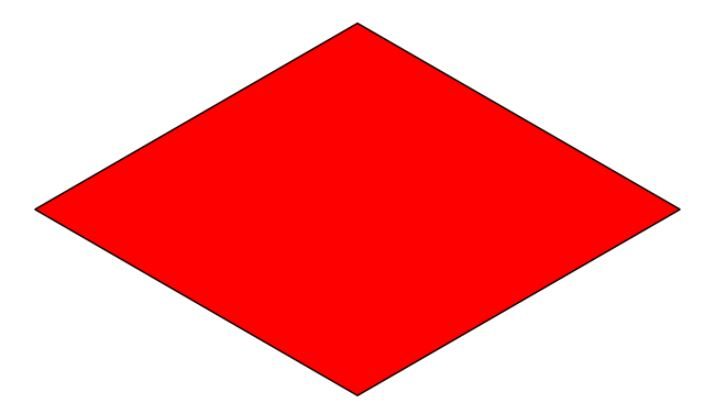
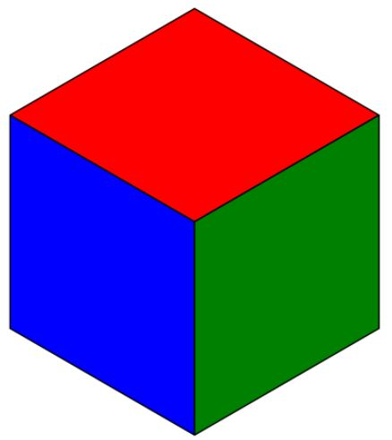
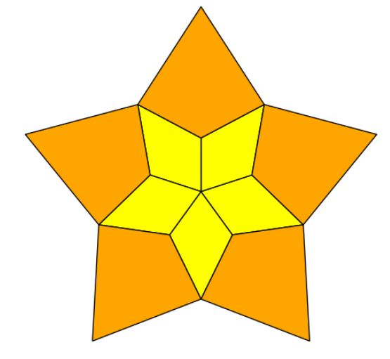
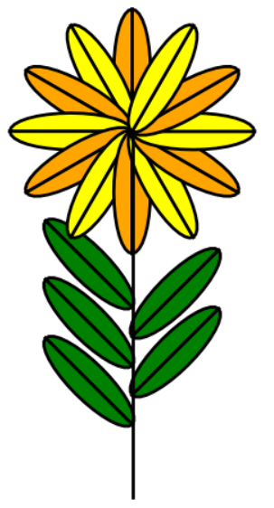

Ejercicio 1 (a) · la matriz
Calcula la matriz del giro g de 30° en ℝ².
Resolución explicada
cos 30° = √3/2 y sin 30° = 1/2:
ResultadoG = √3/2−1/21/2√3/2
Álgebra y Matemática Discreta · Prácticas con SageMath
Las matrices de giros, simetrías y escalados aplicadas a los vértices de un objeto lo mueven, lo reflejan o lo deforman. Con ellas se colocan piezas, se completa un avión a partir de un ala, se planta un bosque, se teselan mosaicos y se anima una estrella.
Práctica 9
Todas se construyen con una base ortonormal adaptada: en ella la aplicación es diagonal.
Para transformar un objeto se aplica la matriz a cada vértice y se mantienen las caras: objeto([A*vector(v) for v in vertices], caras, …). Al ejecutar la primera celda se cargan geometria.py y la función giro(a).
Ejercicio 1
Matriz del giro y su efecto sobre un hexágono.
Calcula la matriz del giro g de 30° en ℝ².
cos 30° = √3/2 y sin 30° = 1/2:
ResultadoG = √3/2−1/21/2√3/2
C es el hexágono regular centrado en el origen con un vértice en (5, 4). Calcula sus vértices y los de g(C) y dibuja ambos.
Radio √41. Con u = (5, 4)/√41 y v = (−4, 5)/√41, los vértices son √41(cos(kπ/3)u + sin(kπ/3)v) = cos(kπ/3)(5, 4) + sin(kπ/3)(−4, 5):
ResultadoC: (5, 4), (5/2 − 2√3, 2 + 5√3/2), (−5/2 − 2√3, −2 + 5√3/2), (−5, −4), (−5/2 + 2√3, −2 − 5√3/2), (5/2 + 2√3, 2 − 5√3/2)
g(C) se obtiene multiplicando cada vértice por G; por ejemplo g(5, 4) = (5√3/2 − 2, 5/2 + 2√3). Como el hexágono tiene simetría de 60°, g(C) es el mismo hexágono «a medio camino»: sus vértices caen en las bisectrices de los de C.
Ejercicio 1
G = giro(pi/6); show(G)
r = vector([5, 4]).norm(); u = vector([5, 4]) / r; v = vector([-4, 5]) / r
C = [r*cos(k*pi/3)*u + r*sin(k*pi/3)*v for k in range(6)]
gC = [G*P for P in C]
print([P.simplify_full() for P in C]); print([P.simplify_full() for P in gC])
(poligono(C, color=amarillo, wire=True) + poligono(gC, color=azul, wire=True)).show(aspect_ratio=1)Ejercicio 2
La pieza de pieza.obj y la recta r = ⟨(2, 3)⟩.
a) Coloca la pieza respecto a la base ortonormal determinada por la recta y dibuja ambas. b) Calcula las matrices de las simetrías respecto a la recta y a su perpendicular y úsalas para que el dibujo sea simétrico respecto a las dos.

a) u = (2, 3)/√13, v = (−3, 2)/√13 y P = [u v]: P lleva e₁ a u y e₂ a v, así que P·x «coloca» la pieza con la recta haciendo de eje X.
b) Sr = 2uuᵗ − I y S⟂ = −Sr:
ResultadoSr = 113−512125, S⟂ = 1135−12−12−5
Comprobación: Sr(2, 3) = (2, 3) y Sr(−3, 2) = (3, −2). El dibujo simétrico tiene cuatro copias: la pieza, Sr·pieza, S⟂·pieza y SrS⟂·pieza (= −pieza, el giro de 180°).
Ejercicio 2
vertices, caras, colores = importarObjeto("pieza.obj", color=True, dim=2)
u = vector([2, 3]).normalized(); v = vector([-3, 2]).normalized(); P = column_matrix([u, v])
Sr = 2*u.column()*u.row() - identity_matrix(2); Sp = -Sr; show(Sr)
pieza = [P*vector(x) for x in vertices]
ob = line([-0.6*vector([2, 3]), 0.6*vector([2, 3])], color='black') + line([-0.6*vector([-3, 2]), 0.6*vector([-3, 2])], color='gray')
for M, col in [(identity_matrix(2), rojo), (Sr, azul), (Sp, verde), (Sr*Sp, naranja)]:
ob += objeto([M*x for x in pieza], caras, color=col, dim=2)
ob.show(aspect_ratio=1)Ejercicio 3
Construir la aplicación, comprobarla y aplicarla a un objeto 3D.
Simetría respecto a Π = {x − y + 2z = 0}. Aplícala al cubo de cubo.obj.
n = (1, −1, 2), nᵗn = 6: S = I − 13nnᵗ.
ResultadoS = 1321−2122−22−1
Comprobación: S·n = −n y S deja fijos (1, 1, 0) y (0, 2, 1), que están en Π. El cubo de cubo.obj está centrado en el origen (que está en Π); para ver bien la imagen lo desplazamos antes a (3, 0, 0).
Ejercicio 3 (a)
n = vector([1, -1, 2]); S = identity_matrix(3) - 2*n.column()*n.row()/(n*n); show(S)
print(S*n == -n, S*vector([1, 1, 0]), S*vector([0, 2, 1]))
vertices, caras, colores = importarObjeto("cubo.obj", color=True)
cubo = [vector(x) + vector([3, 0, 0]) for x in vertices]
plano(ec='x-y+2*z=0', l=10) + objeto(cubo, caras, color=colores) + objeto([S*x for x in cubo], caras, color=colores)Simetría respecto a r = ⟨(1, 2, −1)⟩. Aplícala al cubo.
Con u = (1, 2, −1), S = 2uuᵗuᵗu − I: deja fija la recta y cambia de signo su perpendicular (es un giro de 180° alrededor de r).
ResultadoS = 13−22−121−2−1−2−2
S·(1, 2, −1) = (1, 2, −1) y S·(2, −1, 0) = (−2, 1, 0) ✓.
Ejercicio 3 (b)
u = vector([1, 2, -1]); S = 2*u.column()*u.row()/(u*u) - identity_matrix(3); show(S)
print(S*u == u, S*vector([2, -1, 0]))
vertices, caras, colores = importarObjeto("cubo.obj", color=True)
cubo = [vector(x) + vector([3, 0, 0]) for x in vertices]
recta(u, l=10) + objeto(cubo, caras, color=colores) + objeto([S*x for x in cubo], caras, color=colores)avion.obj tiene el fuselaje y ala.obj un ala. Identifica el plano de simetría del avión y calcula la otra ala.
Comparando las coordenadas, el fuselaje es invariante al intercambiar x e y: su plano de simetría es x − y = 0. Con n = (1, −1, 0), S = I − nnᵗ intercambia las dos primeras coordenadas:
ResultadoS = 010100001; segunda ala = S·ala
Ejercicio 3 (c)
va, ca, cola = importarObjeto("avion.obj", color=True)
vl, cl, coll = importarObjeto("ala.obj", color=True)
n = vector([1, -1, 0]); S = identity_matrix(3) - 2*n.column()*n.row()/(n*n)
redondo = lambda x: tuple(round(float(c), 3) for c in x)
fuselaje = set(redondo(x) for x in va); print(all(redondo(S*vector(x)) in fuselaje for x in va)) # True: es simétrico
(objeto(va, ca, color=cola) + objeto(vl, cl, color=coll) + objeto([S*vector(x) for x in vl], cl, color=coll)).show(frame=False)Ejercicio 4
Escalar distinto en distintas direcciones.
Matriz de la aplicación que multiplica por 2 los vectores de r = ⟨(1, 1, 1)⟩ y por 3 los perpendiculares a r.
Proyección sobre r: P = 13J (J la matriz de unos). A = 2P + 3(I − P) = 3I − P:
ResultadoA = 138−1−1−18−1−1−18
A(1, 1, 1) = (2, 2, 2) y A(1, −1, 0) = (3, −3, 0) ✓.
Ejercicio 4 (a)
u = vector([1, 1, 1]); P = u.column()*u.row()/(u*u)
A = 2*P + 3*(identity_matrix(3) - P); show(A); print(A*u, A*vector([1, -1, 0]), A*vector([1, 1, -2]))arbol.obj contiene un árbol. Dibuja 6 árboles, cada uno con un escalado y un giro elegidos al azar.
Para cada árbol: un factor s al azar (escalado sI), un ángulo α al azar (giro alrededor del eje Z, que es el vertical) y una traslación para colocarlo en el suelo. Vértice nuevo = posición + Gα·s·v.
Ejercicio 4 (b)
vertices, caras, colores = importarObjeto("arbol.obj", color=True)
def giroZ(a): return matrix(RDF, [[cos(a), -sin(a), 0], [sin(a), cos(a), 0], [0, 0, 1]])
bosque = Graphics()
for k in range(6):
s, a = 0.6 + 0.8*random(), 2*pi*random()
pos = vector(RDF, [3*(k % 3), 3*(k // 3), 0])
M = giroZ(a) * s
bosque += objeto([pos + M*vector(v) for v in vertices], caras, color=colores)
bosque.show(frame=False)Opcionales
Composiciones de giros, simetrías y traslaciones para dibujar figuras.
Círculo de radio 8 centrado en el origen y 5 puntos al azar sobre él; en cada uno, un edificio perpendicular al círculo y escalado 0,6, 0,4, 0,7, 0,8 y 0,5.
En el punto C = 8(cos θ, sin θ), v = C/‖C‖ es la dirección radial (hacia fuera) y u = (−v₂, v₁) la tangente. P = [u v] lleva el eje Y del edificio (su altura) a la dirección radial: queda perpendicular al círculo. Vértice nuevo = C + P·(s·v).
Ejercicio 5
vertices, caras, colores = importarObjeto("edificio.obj", color=True, dim=2)
r = 8; borde = [r*vector([cos(2*pi*i/64), sin(2*pi*i/64)]) for i in range(65)]
ob = poligono(borde, color=verde, opacidad=1) + segmentos(borde)
for s in [0.6, 0.4, 0.7, 0.8, 0.5]:
t = 2*pi*random(); C = r*vector(RDF, [cos(t), sin(t)])
v = C.normalized(); u = vector([-v[1], v[0]]); P = column_matrix([u, v])
ob += objeto([C + P*(s*vector(x)) for x in vertices], caras, color=colores, dim=2)
ob.show(axes=False, aspect_ratio=1)En el código del enunciado
Dibuja 12 edificios con escalas al azar y coloca cada uno en el ángulo i*ang (con ang ya aleatorio), de modo que no respeta las cinco escalas pedidas. Aquí está corregido.
A) Con la pieza de pieza3.obj (un rombo de 60°) construye un cubo en perspectiva. B) Modifica el programa para construir mosaicos de cubos.

A) El rombo tiene un vértice en el origen y ángulos de 60° y 120°. Girándolo 120° y 240° alrededor de ese vértice, las tres copias cierran un hexágono: las tres caras visibles de un cubo.
B) El cubo así formado tesela el plano trasladándolo con dos vectores que unen vértices homólogos: desp₁ = P₃ − P₂ = (√3, 0) y desp₂ = Q₀ − P₃ = (−√3/2, −3/2). Con j·desp₁ + k·desp₂ para j, k = 0…4 sale el mosaico de final5; recorriendo sólo algunos (j, k) se obtienen las escaleras de final3 y final4.
Ejercicio 6
vertices, caras, colores = importarObjeto("pieza3.obj", color=True, dim=2)
A = giro(2*pi/3)
v1 = [vector(x) for x in vertices]; v2 = [A*x for x in v1]; v3 = [A*x for x in v2]
cubo = lambda d: sum(objeto([d + x for x in vs], caras, color=c, aristas=True, dim=2) for vs, c in [(v1, rojo), (v2, azul), (v3, verde)])
cubo(vector([0, 0])).show(axes=False, aspect_ratio=1)
P0, P1, P2, P3 = v1[0], v1[1], v1[2], v1[3]
d1, d2 = P3 - P2, (P1 - vector([0, (P2 - P0).norm()])) - P3
sum(cubo(j*d1 + k*d2) for j in range(5) for k in range(5)).show(axes=False, aspect_ratio=1)Con pieza1.obj (rombo amarillo) y pieza2.obj (cometa naranja) construye la estrella de la figura.

Los rombos tienen un ángulo de 72° en el origen: cinco copias giradas k·72° forman la flor central. Cada cometa se apoya en el vértice lateral C del rombo correspondiente: se gira −36° para que encaje entre dos rombos y luego se aplica el mismo giro k·72° que a su rombo, de modo que el vértice nuevo es Aᵏ·C + A₂·Aᵏ·v.
Ejercicio 7
v1, c1, _ = importarObjeto("pieza1.obj", color=True, dim=2)
v2, c2, _ = importarObjeto("pieza2.obj", color=True, dim=2)
A, A2 = giro(2*pi/5), giro(-pi/5); C = vector(v1[2])
ob = Graphics()
for k in range(5):
ob += objeto([A^k*vector(x) for x in v1], c1, color=amarillo, aristas=True, dim=2)
ob += objeto([A^k*C + A2*A^k*vector(x) for x in v2], c2, color=naranja, aristas=True, dim=2)
ob.show(axes=False, aspect_ratio=1)A) Media elipse como perfil de media hoja. B) La simetría respecto al eje Y completa la hoja. C) Con copias de la hoja construye la flor.

A) (0, 1) + (0,3·cos θ, sin θ) con θ de −π/2 a π/2: media elipse de semiejes 0,3 y 1 que va de (0, 0) a (0, 2). B) SY = −1001 refleja la mitad. C) Las hojas del tallo están giradas ±45° (alternando con SY) y trasladadas a puntos del tallo; los 12 pétalos son la hoja girada k·30° alrededor de la punta del tallo.
Ejercicio 8
t = [-pi/2 + i*pi/16 for i in range(17)]
media = [vector([0.3*cos(a), 1 + sin(a)]) for a in t]
SY = matrix([[-1, 0], [0, 1]]); otra = [SY*x for x in media]
G = giro(pi/4); P0, P1 = vector([0, 0]), vector([0, 6])
ob = segmentos([P0, P1])
for i in range(5):
C = P0 + (1/5 + 2/5*i/5)*(P1 - P0); M = G if i % 2 == 0 else SY*G
for mitad in (media, otra): ob += poligono([C + M*x for x in mitad], wire=True, color=verde, opacidad=1)
for k in range(12):
M = giro(k*pi/6)
for mitad in (media, otra): ob += poligono([P1 + M*x for x in mitad], wire=True, color=naranja if k % 2 == 0 else amarillo, opacidad=1)
ob.show(aspect_ratio=1, axes=False)Anima la estrella de estrella.obj para que gire sobre sí misma mientras se hace más pequeña y luego más grande.
Fotograma k: ángulo a = 2πk, giro G(a) y escalado T(a) = (1 + 0,3 cos a)·I. Cada vértice pasa a G·T·v; al ser T un múltiplo de la identidad, G y T conmutan.
Ejercicio 9
vertices, caras, colores = importarObjeto("estrella.obj", color=True, dim=2)
fotogramas = []
for k in srange(0, 1, 0.025):
a = 2*pi*k; T = (1 + 0.3*cos(a)) * identity_matrix(RDF, 2)
fotogramas.append(objeto([giro(a).change_ring(RDF)*T*vector(v) for v in vertices], caras, color=colores, dim=2))
graphics_array(fotogramas[::8], 1, 5).show(axes=False) # cinco fotogramas
animate(fotogramas, xmin=-1.4, xmax=1.4, ymin=-1.4, ymax=1.4, aspect_ratio=1, axes=False).show(delay=5)(Si el servidor no puede generar el GIF, la primera imagen ya muestra la secuencia.)
Enunciados de la práctica 9 resueltos y explicados; el código de los opcionales parte del que acompaña al enunciado, corregido donde hacía falta.
Ficheros de esta página, para usarlos en tu SageMath:
Las celdas de SageMath se ejecutan en SageMathCell, el servicio público del proyecto SageMath.